地政学
ベルファストは英国の一部である北アイルランドの政治中心です。アイルランド島、英国本土、EU、和平合意を結ぶ地点にあり、国境、貿易、自治、宗派関係が日常の行政と街路に響く都市です。港と空港も対岸を意識させます。
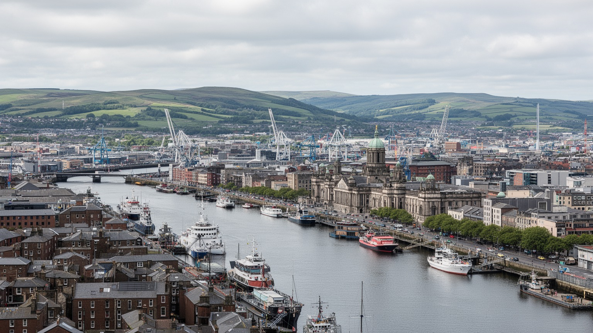
🇬🇧 英国 / 北アイルランド / World City Atlas
ラガン川河口の北アイルランド最大都市です。自治政府、港、造船遺産、映画産業、大学、壁画、宗派分断、和平後の再生、観光、海辺の気候が近い距離で重なります。
都市の骨格
ベルファストはラガン川の河口に港と中心市街を置き、背後の丘陵と住宅地へ広がります。造船の記憶、自治政治、宗派ごとの近隣、大学、映画スタジオ、観光地区が、歩ける距離の中で交差します。
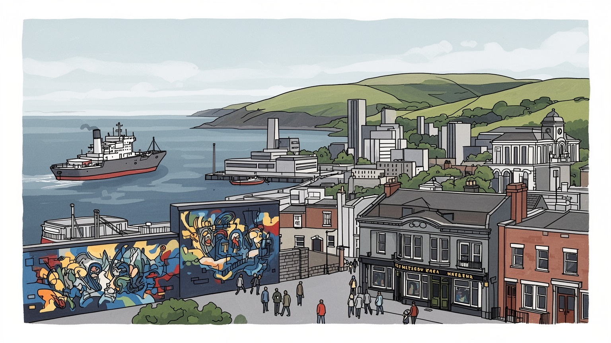
ベルファストは英国の一部である北アイルランドの政治中心です。アイルランド島、英国本土、EU、和平合意を結ぶ地点にあり、国境、貿易、自治、宗派関係が日常の行政と街路に響く都市です。港と空港も対岸を意識させます。
造船と麻織物で成長した都市は、行政、大学、医療、港湾、観光、金融、IT、映画制作へ軸を移しました。高技能職と公共部門が増える一方、清掃、介護、飲食、配送、建設の仕事が暮らしを支え、賃金差もなお残ります。
カトリックとプロテスタント、英国系とアイルランド系の記憶が、教会、学校、行進、壁画、スポーツ、家族史に残ります。和平後は音楽、文学、映画、大学、多文化の店も厚みを増し、信仰と文化の境界が動いています。
観光客は市庁舎、タイタニック地区、壁画、酒場、マーケットを巡りますが、住民には住宅、交通、教育、医療、分断された近隣の移動が身近です。再開発の明るさと不平等を同時に読む必要がある街です。今日も続きます。
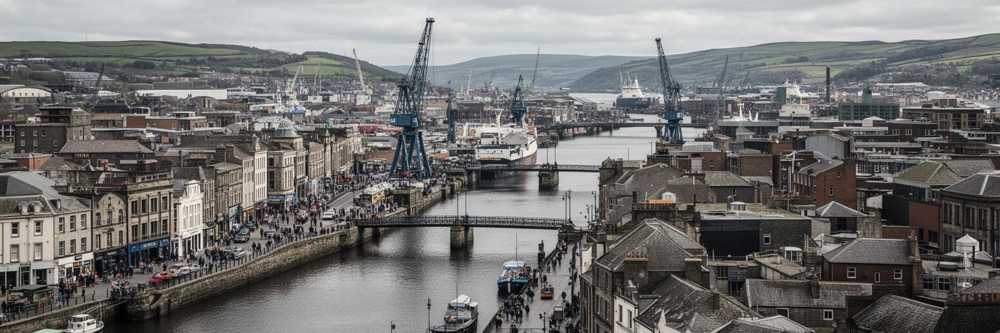
ベルファストを読む入口は、ラガン川がベルファスト湾へ注ぐ地形です。川の河口には港が開き、倉庫、埠頭、橋、道路、鉄道、造船所、再開発地区が都市の骨格を作ってきました。中心部は大都市ほど広くありませんが、市庁舎、商業街、大学、裁判所、マーケット、港湾地区が短い距離で切り替わります。東側には造船と港の記憶が濃く、北と西には労働者住宅と宗派ごとの近隣が広がり、南には大学や比較的落ち着いた住宅地があります。背後の丘陵は街を包むように見え、天候が変わるたびに港町らしい光を変えます。水辺の再開発は観光と企業誘致を進めましたが、川沿いの新しい景観だけでは都市の全体像は見えません。港湾物流、通勤道路、低地の浸水対策、古い住宅地の改修、地区間の心理的距離も、同じ地形の上にあります。ラガン川は散歩道であると同時に、造船からサービス業へ移った都市の変化を映す軸です。橋を渡るたびに、労働の記憶、観光の演出、自治政治、住宅の格差が近い距離で現れます。ベルファストの地形は、川と湾が開く外向きの力と、丘と近隣が作る内向きの境界を同時に持っています。その二重性が、都市の親密さと難しさを生んでいます。さらに、潮位と雨水の管理は低地の住宅や港湾投資に直結し、都市の成長が自然条件から逃れられないことを示します。水辺を歩く楽しさの裏で、護岸、排水、橋の維持が日常を静かに支えています。
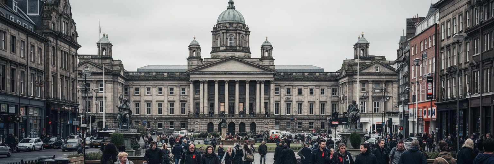
ベルファストは北アイルランド政治の中心であり、自治議会、行政府、英国政府との関係、アイルランド共和国との制度調整が街の背後で動いています。ストーモントの議会建物は中心部から離れた緑の中にありますが、そこで止まる政治は学校、住宅、医療、交通、警察、文化予算へすぐ響きます。1998年のベルファスト合意以後、暴力の規模は大きく下がりましたが、和平は完了した状態ではなく、共有された制度を毎日維持する仕事です。英国への帰属を重視する人、アイルランド統一を望む人、どちらにも単純に収まらない人が、同じ都市で公共サービスを使い、働き、学びます。ブレグジット後は、物品の流れ、国境管理、北アイルランド議定書、英国市場とEU市場の間の位置が、港と企業に現実的な課題をもたらしました。政治の対立は抽象的な理念だけでなく、標識、旗、行進、学校選択、住宅地の境界に表れます。一方で、協働プロジェクト、若者の交流、地域団体、芸術、スポーツは、分断を固定しないための小さな回路を作っています。ベルファストの政治性は首都級の制度があるからではなく、制度の失敗や成功が近隣の暮らしへ直接届くから強いのです。和平後の都市を読むには、記念碑よりも、合意を支える行政、対話、予算、信頼の細い積み重ねを見る必要があります。とくに若い世代が、親の記憶を尊重しながらも別の将来像を語れるかが重要です。
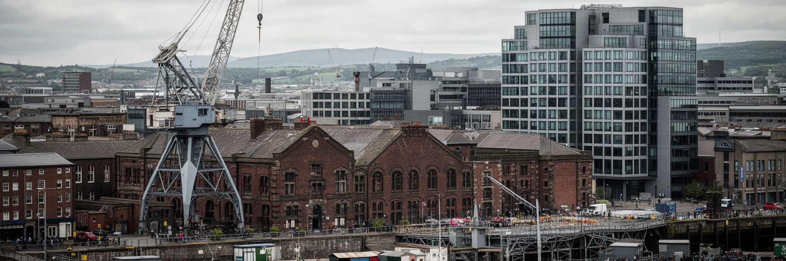
ベルファストの近代史は、造船、麻織物、重工業の成長なしには語れません。ハーランド・アンド・ウルフの巨大なクレーンは、いまも港の象徴として見え、タイタニックを建造した都市という記憶を観光と地域の誇りへ変えています。かつての工場と造船所は、熟練労働、労働組合、階級、宗派ごとの雇用機会、帝国経済とのつながりを生みました。しかし重工業の縮小は、失業、人口流出、街区の荒廃、若者の将来不安を深めました。現在のベルファストは、公共部門、大学、医療、金融、専門サービス、観光、IT、映画制作、港湾物流へ産業の軸を移しています。新しい仕事は都市を明るく見せますが、すべての住民が同じように移行できたわけではありません。専門職の成長には教育、交通、住宅、職業訓練が必要で、かつて工場で働いた家族の経験とどう接続するかが重要です。港湾は今も物資の流れを担い、再生可能エネルギー関連の製造や整備にも可能性があります。産業転換を成功と呼ぶには、古い工業地の記念化だけでなく、地域の若者が新しい技能を得て、安定した雇用へ進める仕組みが必要です。ベルファストのクレーンは過去のモニュメントではなく、都市が労働の尊厳をどう受け継ぐかを問う目印でもあります。工場の音が小さくなった後も、整備士、港湾作業員、看護師、講師、映像スタッフの手が都市を動かしています。
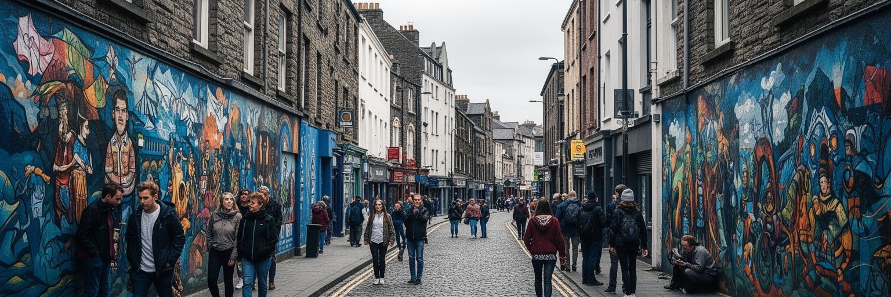
ベルファストの壁画は、都市の記憶を最も強く可視化するものの一つです。西ベルファストやシャンキル周辺を歩くと、共和主義、ユニオニズム、犠牲者、囚人、労働運動、国際連帯、スポーツ、地域の英雄を描く壁が現れます。壁画は単なる観光写真の背景ではなく、誰がこの通りを守り、誰を悼み、どの歴史を語るのかを示す公共の表現でした。和平後には新しい芸術作品や記念の方法も増えましたが、壁面に残る言葉や色は、分断が消えたわけではないことを伝えます。黒タクシーのツアーやガイド付き散歩は訪問者に背景を説明しますが、住民にとってその壁は日々の通学路、買い物道、家の前の景色でもあります。記憶を観光資源にすることには緊張があります。暴力や喪失を消費するだけでは、都市の痛みを浅く扱うことになります。一方で、壁画を隠すだけでは歴史から学ぶ機会も失われます。重要なのは、誰の声で説明し、収益が地域へ戻り、若者が過去に閉じ込められず新しい表現へ進めるかです。ベルファストの壁画は、対立の証拠であると同時に、言葉にしにくい経験を共有空間へ置く方法でもあります。街路の色を読むことは、和平後の都市が記憶をどう扱うかを読むことです。近年の壁面には平和、女性、国際問題、地域の創作を扱うものも増え、記憶は固定された展示ではなく更新される対話になっています。
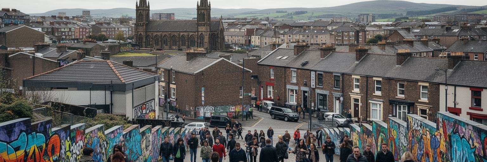
ベルファストでは、宗教は礼拝だけでなく、近隣、学校、家族史、スポーツ、政治的帰属と結びついてきました。カトリックとプロテスタントという言葉は信仰の違いを示しますが、実際にはアイルランド系か英国系か、どの学校へ通ったか、どの通りで育ったか、どの旗が掲げられるかという生活の境界でもあります。市内には教会、礼拝堂、コミュニティセンター、学校が密にあり、祭礼や行進は地域の誇りであると同時に、他者にとっては緊張の合図にもなります。和平後もピースラインと呼ばれる隔壁は残り、住宅地の移動や交流を制限しています。ただし、都市は固定された二分法だけで動いているわけではありません。世俗化、移民の増加、多宗教化、大学生の流入、混住を望む若い世代の変化が、古い境界を少しずつ揺らしています。信仰共同体は、貧困支援、葬儀、子どもの活動、依存症支援、対話の場としても重要です。分断を語る時、宗教を原因として単純化すると、雇用、住宅、国家帰属、警察への信頼、歴史的な不平等が見えなくなります。ベルファストの近隣を読むには、教会の塔、学校の門、壁の位置、バス路線、商店の客層を同じ地図に置く必要があります。信仰は境界を作る力であり、同時に和解を支える場にもなり得ます。日曜の礼拝、学校行事、地域の葬儀、慈善活動は、政治の大きな言葉では届かない感情を受け止めています。
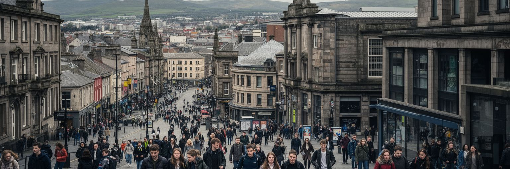
近年のベルファストを変えている力の一つが、大学と映像産業です。クイーンズ大学ベルファストやアルスター大学は、研究、医療、法律、工学、文化、国際学生を都市へ引き寄せ、中心部の人口構成と消費を変えています。学生街にはカフェ、書店、賃貸住宅、夜の店が集まり、若い世代の文化が育ちます。同時に、学生住宅の増加は近隣の家賃や生活環境を変え、地域住民との調整も必要になります。タイタニック地区周辺では映画・テレビ制作のスタジオが成長し、制作スタッフ、セット建設、衣装、ポストプロダクション、観光の仕事を生んでいます。映像産業は都市のイメージを外へ届ける力を持ちますが、短期契約や作品ごとの雇用に依存する不安定さもあります。大学と映像の成長が本物の都市再生になるには、地元の若者が技能を学び、初期の職場へ入れる経路が欠かせません。文化施設、劇場、音楽会場、映画館、地域アートも、創造産業の土台です。ベルファストは過去の紛争や造船だけで語られがちですが、研究室、編集室、撮影所、学生寮、劇場のリハーサル室では、都市の新しい物語が作られています。その変化を広い地域へ届かせることが、中心部だけの再生にしない条件です。大学の研究成果が医療や地域支援へ戻り、映像の仕事が周辺の小規模事業者へ広がる時、成長は街全体の力になります。
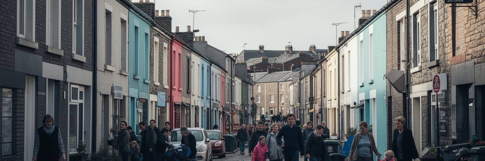
ベルファストの社会問題は、住宅と近隣の条件に強く表れます。古いテラス住宅、社会住宅、再開発マンション、学生住宅、郊外の一戸建てが混在し、地区ごとに所得、健康、教育、雇用機会が大きく異なります。紛争期の分断は住宅配置にも刻まれ、ある地域では同じ宗派や政治的帰属の住民が集まり、別の地域へ移ることに不安が残ります。和平後の投資は中心部を明るくしましたが、貧困、依存症、メンタルヘルス、失業、若者の孤立、家庭内の問題は簡単には消えません。公共サービスや地域団体は、暴力の経験を持つ世代と、直接の記憶を持たない若者の間で支援の形を変える必要があります。観光地区の整備や高級住宅の建設だけでは、日常の不平等は解けません。安定した住まい、職業訓練、学校支援、医療へのアクセス、地域交通、保育、女性の安全が、都市の回復を支える基盤です。ベルファストの住宅を読むことは、和平が誰の暮らしに届いているかを確認することでもあります。新しい建物が増えても、住民が近隣に残れず、若者が将来を描けなければ、再生は表面にとどまります。市の魅力は壁画や港湾遺産だけでなく、普通の家族が安心して暮らせる街路がどれだけ増えるかで決まります。住宅政策は治安、教育、健康を分けて考えられず、近隣の信頼を回復する長い仕事でもあります。日々の安心にも直結します。
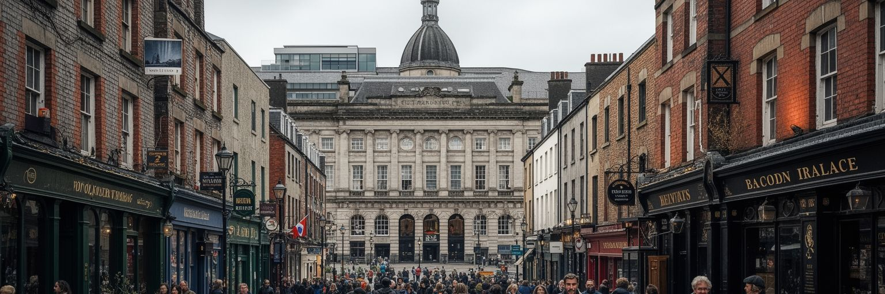
ベルファスト観光の入口として最も知られるのは、タイタニック地区です。造船所跡、展示施設、巨大なクレーン、ドック、港の景観は、産業都市の記憶を訪問者に伝えます。市庁舎、セントジョージズ・マーケット、カテドラル・クォーター、酒場、音楽、壁画ツアー、大学周辺、植物園も、歩いて回れる都市の魅力を作っています。観光は雇用と誇りをもたらし、紛争のイメージが強かった都市に新しい視線を呼び込みました。しかし観光が増えるほど、記憶の扱い方、夜の騒音、短期滞在、中心部の価格、地域への利益還元が課題になります。タイタニックの物語は世界的ですが、造船で働いた人びとの技能、危険、階級、移民、港湾労働の生活まで語らなければ、遺産は消費しやすいブランドに縮みます。壁画ツアーも同じです。過去の痛みを説明する時には、住民の尊厳と多様な記憶に配慮が必要です。ベルファストの観光の強さは、名所が中心部に近いだけでなく、産業、政治、音楽、食、近隣の歴史が一日の散歩でつながる点にあります。訪問者にとって楽しい街であるほど、そこで働く人の賃金、交通、住まいも見えにくくなります。よい観光都市であり続けるには、観光客の導線と住民の日常を対立させない設計が必要です。市場で買い物をする住民と、展示施設へ向かう旅行者が同じ街路を使えることが、観光の成熟を示します。
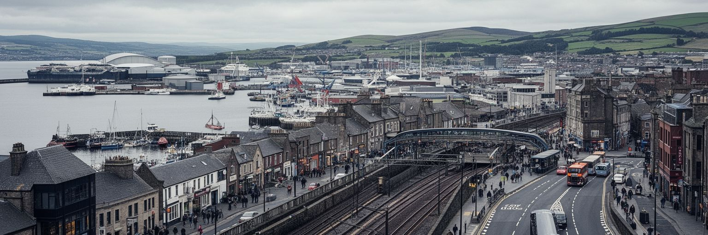
ベルファストの交通は、港湾都市としての外向きの接続と、分断された近隣を結ぶ内側の移動の両方を担います。港からは英国本土や周辺地域へ貨物と旅客が動き、空港はロンドン、スコットランド、欧州方面との結びつきを支えます。市内では鉄道、バス、道路、自転車道、徒歩空間が中心部と郊外をつなぎますが、通勤の便利さは地区ごとに差があります。車に頼る生活が増えれば、渋滞、駐車、排出、道路安全が問題になり、公共交通が弱い地域ほど就職や教育の選択肢が狭くなります。ベルファストでは、物理的な距離だけでなく、宗派や政治的帰属に由来する心理的な距離も移動を左右してきました。近い場所でも、通り抜けにくい壁や境界があれば、都市の機会は分断されます。交通改善は単に速さの問題ではなく、どの学校、病院、職場、文化施設へ行きやすいかを変える公平性の政策です。港湾の物流はブレグジット後の制度変更にも敏感で、検査、書類、倉庫、道路容量が企業活動に影響します。観光客には歩きやすい中心街が印象的でも、夜勤の労働者、学生、郊外の家族には運行本数や終電が生活の質を決めます。ベルファストを交通の都市として読むには、港のフェリー、空港連絡、バス停、ピースラインのゲート、雨の日の歩道を同じ地図で見る必要があります。移動の自由は和平の実感にもなります。
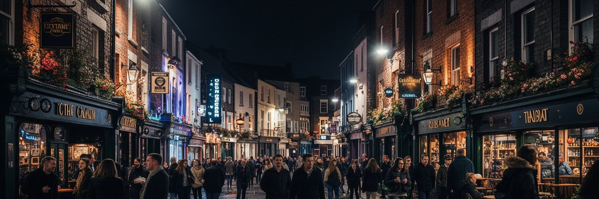
ベルファストの日常文化には、酒場、音楽、マーケット、家庭料理、移民の食堂が深く関わります。パブは観光客がライブ音楽や地元のビールを楽しむ場所であると同時に、住民の会話、スポーツ観戦、追悼、政治談義、仕事帰りの休息の場でもあります。音楽は伝統的なアイリッシュ音楽だけでなく、ロック、パンク、クラブ、合唱、教会音楽、学生バンドまで幅があります。セントジョージズ・マーケットのような場所では、地元産の食材、パン、魚介、コーヒー、国際的な料理が並び、都市の変化を味覚で感じられます。食と酒場の楽しさは、飲食店で働く人の賃金、深夜交通、家賃、騒音、観光地化とも結びつきます。中心部の賑わいが増えても、地域の小さな店や音楽会場が高い費用で消えれば、文化の厚みは失われます。移民の店や学生向けの安い食堂は、ベルファストが二つの伝統だけでは語れない都市になっていることを示します。食卓や音楽の場は、政治的な対話より柔らかく人を混ぜる力を持ちますが、それだけで分断を解くわけではありません。安全で手頃な場所、遅い時間の移動、若い演奏者の練習場、地域の祭りがあって初めて、文化は住民のものとして続きます。ベルファストの夜を読むことは、楽しさを支える労働と近隣の静けさを同時に見ることです。小さな会場が残るほど、新しい声も街に根づきます。
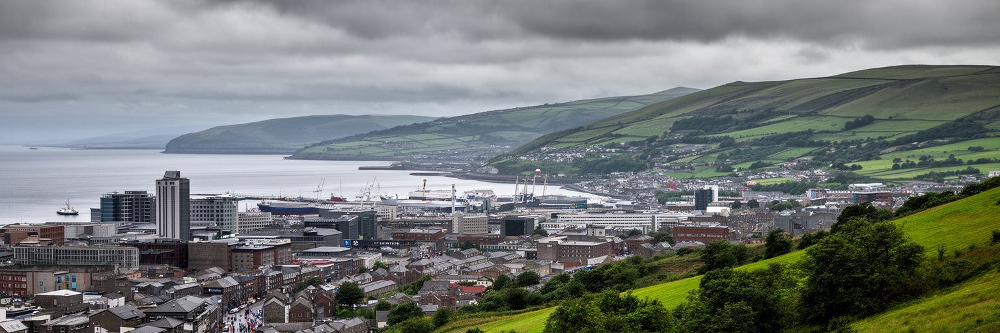
ベルファストの気候は海洋性で、極端な暑さや寒さよりも、雨、風、湿り気、雲の変化、涼しい夏が暮らしの感覚を作ります。湾に近いことは、港、海辺の散歩、鳥の生息地、丘陵からの眺めを都市に与えますが、高潮、低地の浸水、排水、港湾インフラの保護という課題もあります。気候変動は抽象的な環境問題ではなく、ラガン川沿いの開発、古い住宅の断熱、道路の冠水、公共交通の信頼性、医療や福祉の備えに関わります。雨の多い都市では、街路樹、公園、透水性舗装、緑地、川沿いの余白が生活の質を左右します。寒さや湿気に弱い古い住宅では、燃料費と健康問題が結びつき、低所得世帯ほど負担が大きくなります。観光客には雨上がりの石畳や丘の緑が魅力に見えても、住民には暖房費、バス待ち、通学路、住宅改修が日常の課題です。港湾と空港は気候リスクに備えながら、排出削減も求められます。ベルファストの気候を読むには、海辺の美しさと同時に、排水路、護岸、断熱工事、緑地の分布を見る必要があります。穏やかに見える気候でも、雨風が長く続けば孤立や健康への影響は大きくなります。湾と丘陵に抱かれた都市だからこそ、水と風を前提にした都市設計が、将来の安心を支えます。学校や高齢者施設への避難情報、雨の日も使いやすいバス停、暖かい住宅は、気候対策を日常の福祉へ変えます。
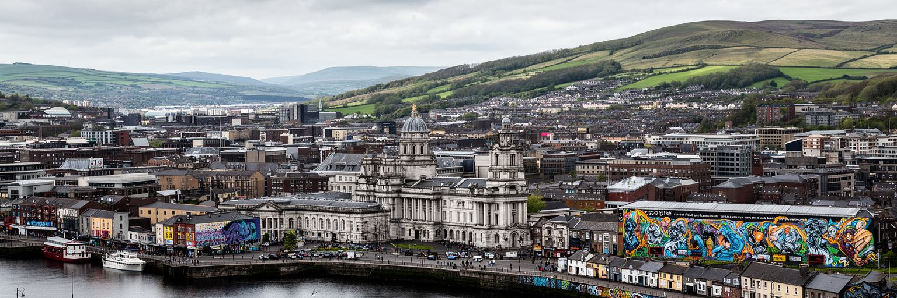
ベルファストを読むことは、和平後の明るい再生だけでなく、その背後に残る境界と生活の条件を重ねて見ることです。ラガン川沿いを歩けば、港、造船の記憶、タイタニック観光、現代的なオフィス、映画スタジオが現れます。少し離れれば、市庁舎、大学、マーケット、酒場、壁画、教会、社会住宅、ピースラインがあり、政治と日常が近い都市であることが分かります。ベルファストの重要性は規模の大きさではなく、英国、アイルランド島、欧州、自治制度、宗派関係、産業転換が一つの都市に圧縮されている点にあります。観光の成功は都市のイメージを変えましたが、住宅、賃金、教育、メンタルヘルス、地区間の移動といった課題は残ります。造船の誇りは大切ですが、過去を記念するだけでは、次の世代の仕事や住まいは生まれません。壁画は訪問者を引きつけますが、そこに住む人の記憶と尊厳を抜きにして語ることはできません。大学、映画、IT、港湾物流、公共サービスが新しい都市を支えるには、分断された近隣をまたぐ機会を増やす政策が必要です。ベルファストの魅力は、海風のある港町らしさ、歩ける中心部、音楽と酒場の親密さにあります。その魅力を保つには、和平を制度としてだけでなく、住民が移動し、学び、働き、暮らせる日常の公平として育てる必要があります。小さな都市だからこそ、政策の遅れも信頼の回復も街路に早く見えます。